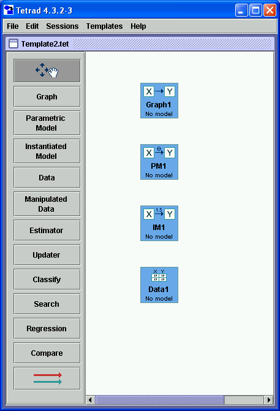
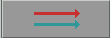
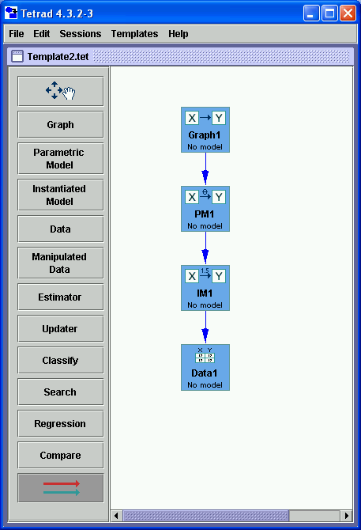
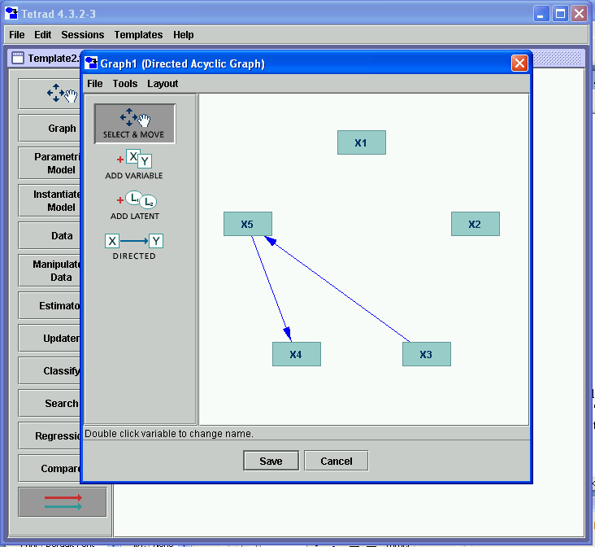
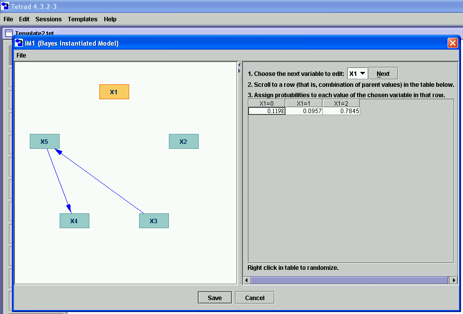

How to Build a Session |
Sessions in Tetrad are constructed by placing boxes into the white session workspace, connecting them up with arrows in legal ways that represent their dependencies, and constructing modules in each box using modules in parent boxes.
The session window allows you to create boxes in which all of the Tetrad objects are created and stored and all of the Tetrad statistical operations are applied and their results are stored. The contents of each box can be viewed by clicking on the box.. To create a box of any kind, for example a Graph box, simply left click on the corresponding tool on the left of the workbench, move the mouse over the workspace, and click again. As soon as you do that, the button for the movement tool at the top of the tool column lights up.
Here, step by step, is an example of how to use the tools in Tetrad to build a random Bayes net model and simulate data from it. (We show how to build a random Bayes net, only because it makes the example shorter; this is not necessarily something you would need to do ordinarily. For detailed explanations of how each module works, see the help files for those modules.) First, we place a Graph box into the workspace, then a PM box, then an IM box, then a Data box. In each case, we do this by first clicking in the toolbar on the left for the type of box we want and then clicking in the workspace area where we want the box to appear. The result after this step is as follows:

Next, we draw flowchart edges from the Graph box to the PM box, from the PM box to the IM box, and from the IM box to the Data box. To start this process, we first click the flowchart tool in the toolbar, which looks like this:

Then we hold the mouse down over the Graph box and drag to the PM box, then release the mouse. Same for PM to IM and IM to Data. (Notice that only legal edges will be drawn; if an edge is not legal, it simply will not be drawn.) The result after this step looks like this:

At this point, we have four boxes in the workspace, with dependencies between them specified, but there are no modules in them. To put a module in the Graph box, double click it, select "Directed Acyclic Graph" from the dropdown, select "A random DAG from the dialog that appears (accepting the defaults), and click "OK." The result will look something like this:

Click "Save." The workspace will now show the Graph box in a different color, indicating that it now contains a module. (The other three are still empty.) To place a module into the PM box, now that the parent it depends on now has a module in it, double click the PM box. Select "Bayes Parametric Model" from the dropdown. Click "OK." Select "Automatically Assigned" from the dialog, accepting the defaults. Click "OK." The result looks something like this:
When you click "Save," now two boxes are filled in. To fill in the IM box, double click it, select "Bayes Instantiated Model," select "Randomly, overwriting previous values," and click "OK." The result looks something like this (with perhaps a different graph and different conditional probabilities showing):

Clicking "Save," you see now three boxes are filled in. Now double click the "Data" box, accepting the defaults, and click "OK." You now have a data set with 1000 cases, simulated from the Bayes net that was randomly generated in the last three steps. It looks something like this:

If you click "Save," you see now that all four boxes are filled in with modules. Notice that along the way, most of the boxes could have stored a variety of different modules. You made a choice as to which modules to put in which boxes. Having made those choices, your choices downstream were constrained. The final workspace looks like this:

If you right-click on any of these boxes, you will get a popup menu with a variety of actions you can take. See Popup Menus for more details. Also, it is important to understand the implications of some boxes being dependent on others. When you destroy the module in a box, modules downstream will be destroyed also. See Flowchart Dependencies for more details.